Le diagramme de classe⚓︎
Le diagramme de classe a pour but de représenter de façon structurée les données qui seront utilisées par le système d'information. Le diagramme de classe décrit la sémantique c’est à dire le sens attaché à ces données et à leurs rapports et non à l’utilisation qui peut en être faite. Il offre une vue statique du système en mettant l'accent sur les concepts de la programmation orientée objet, tels que l'encapsulation, l'héritage, et l'association.
Voici une définition détaillée des éléments principaux d'un diagramme de classe :
Classe : Une classe est une entité abstraite représentant un concept ou un objet dans le système. Elle regroupe des attributs (propriétés) et des méthodes (comportements) liés à cette entité.
Attribut : Les attributs sont les propriétés de la classe, représentant l'état interne de l'objet. Chaque attribut a un type de données qui définit le genre d'information qu'il peut stocker (par exemple, une chaîne de caractères, un entier).
Méthode : Les méthodes sont les opérations ou les actions que la classe peut effectuer. Elles définissent le comportement de la classe et sont associées à des algorithmes ou des séquences d'instructions.
1. Le recueil de données⚓︎
Voilà plusieurs phrases qui décrivent une seule et même personne, prononcées par des personnes différentes.
« Odile Martin est une personne convenable. Et je ne dis pas ça parce c’est une cliente qui m’en prend pour 100F toutes les semaines ! » Le boulanger
« MARTIN Odile, habitant 6 rue des prés, Saint Amour (Jura), née le 13/02/73 à Béziers (Hérault) … » Un inspecteur de police judiciaire
« Odile Martin, voilà une personne qui n’a jamais commis aucun péché mortel, qui a fait preuve de beaucoup de générosité. Elle ira au paradis » Saint Pierre
 Différents interlocuteurs, différents points de vue. Lequel est le plus pertinent ?
Différents interlocuteurs, différents points de vue. Lequel est le plus pertinent ?
Ça dépend du domaine étudié. Mais on ne recense que les informations objectives, formelles en fonction de son BESOIN.
Quand on analyse les données sur un objet (abstrait ou concret) du réel, il est nécessaire de faire le tri entre ce qui est nécessaire pour le système d’information et ce qui ne l’est pas.
Odile sera représentée par au moins ces informations :
| Attribut |
|---|
| Nom |
| Prénom |
| Numéro de la voie |
| Nature de la voie |
| Nom de la voie |
| Commune de résidence |
| Département de résidence |
| Jour de naissance |
| Mois de naissance |
| Année de naissance |
| Commune de naissance |
| Département de naissance |
Peut-on décomposer encore ? Par exemple la commune de résidence est composée de 2 mots, de même que le nom de la voie … va-t-on les décomposer ? Non, ces mots représentent ensemble une information, ne veulent rien dire à eux seuls.
 C'est la notion de Données ELEMENTAIRE
C'est la notion de Données ELEMENTAIRE
 Mais n’avons-nous pas trop décomposé ?
Mais n’avons-nous pas trop décomposé ?
Il existe par exemple des liens entre les informations 3, 4 et 5 qui représentent l’adresse d’Odile, entre les informations 8 et 9 qui représentent sa date de naissance… Ces informations n'ont de SENS qu'une fois assemblées.
On va alors regrouper ensemble ces informations reliées.
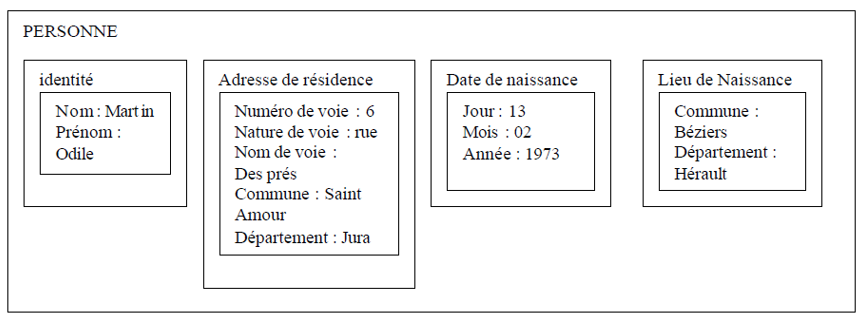
 on peut dire qu’on a créé une CLASSE (un ensemble) PERSONNE dont Odile est une occurrence (ou instance). Les données de base sont appelées PROPRIETES ou ATTRIBUTS.
on peut dire qu’on a créé une CLASSE (un ensemble) PERSONNE dont Odile est une occurrence (ou instance). Les données de base sont appelées PROPRIETES ou ATTRIBUTS.
2. Définitions⚓︎
2.1 Définitions d'une classe⚓︎
Une Classe ou Entité représente un objet du SI (acteur, document, concept, …), ou plus exactement un ensemble d’objets ayant les mêmes caractéristiques.
Dans une Classe, on met les informations nécessaires et suffisantes pour caractériser cette entité. Ces informations sont appelées propriétés ou attributs. Les propriétés sont collectées lors de l’établissement du dictionnaire des données. Les propriétés prennent des valeurs pour chaque occurrence d’une entité. Chaque propriété est typée.
Une propriété particulière, appelée identifiant, permet de distinguer sans ambiguïté toutes les occurrences de l’entité. L’identifiant est suivi de l’indication <<id>>. L’identifiant est une propriété qui ne peut pas changer au cours du temps pour une occurrence.
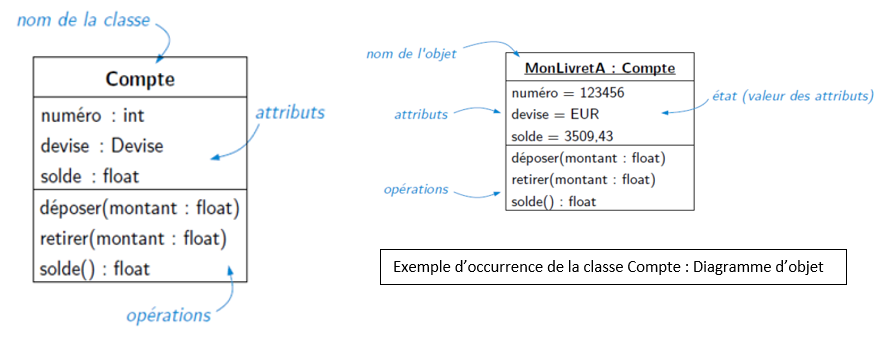
2.2 Les méthodes⚓︎
Une opération est la modélisation d’un service qui peut être sollicité au titre de n’importe quel objet d’une même classe pour déclencher un comportement.
exemple :
lancer() : Integer
afficher() {abstract}
SetNombreFace(in nbFace : Integer =6)
afficher(:Integer)
afficher(:String)
Il existe des méthodes particulières, utilisé en POO : les Constructeurs et desctructeurs : stéréotype « create » ou « destroy »
Note
La signature d'une méthode contient les paramètres d'entrée et leurs types, ainsi que le paramètre de retour si besoin
nomMethode (arg1 : type = val_defaut, arg2 : type = val_defaut,…) : type_retour
2.3 L’encapsulation⚓︎
L’encapsulation consiste à masquer les détails d’implémentation d’un conteneur, comme une classe, en définissant les services accessibles (offert) aux utilisateurs.
Ces services constituent l’interface de la classe (sa vue externe). L’interface est paramétrée en définissant un niveau de visibilité pour chacun des éléments de la classe.
:collision: L’encapsulation s’applique à la fois aux attributs et aux méthodes.
Chaque propriété possède un des niveaux suivants :
| niveau dd'accès | symbole | signification |
|---|---|---|
| Public | + | tout élément qui peut voir la classe peut voir l’élément |
| Protected | # | Seul un élément situé dans le conteneur ou un de ses descendants peut voir l’élément |
| Private | - | Seul un élément situé dans le conteneur peut voir l’élément |
Dans une bonne pratique du code, les attributs sont tous en privé. Et on dispose de méthodes getters/setters pour manipuler les attributs.
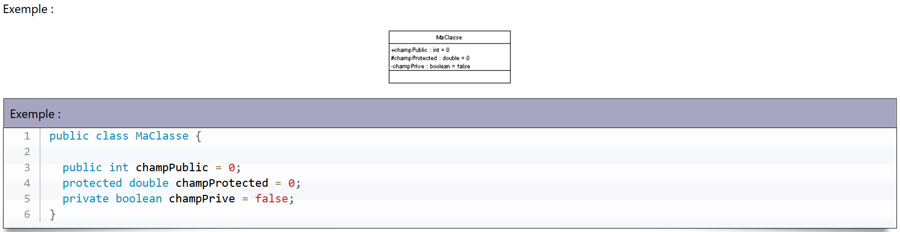
2.4 Attributs particuliers⚓︎
L'Attribut dérivé / :
Attribut dérivé = attribut dépendant d’autres attributs. (exemple : âge dans une classe personne, dépend de la date de naissance et de la date du jour).
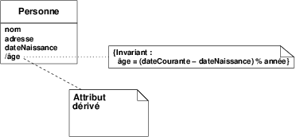
Dans les diagrammes de classes, il est important que les informations ne soient pas redondantes. Une forme de redondance est un attribut dérivé dont la valeur se calcule à partir des valeurs d’un ou plusieurs autres attributs. Dans ce cas, l’attribut dérivé doit être signalé en préfixant le nom de l’attribut avec une barre oblique / afin d’indiquer au lecteur que cet attribut est redondant. C’est une indication importante pour ceux qui implantent l’application car les attributs dérivés demandent un traitement spécial : leur valeur change à chaque fois que la valeur des attributs à partir desquels ils sont calculés change. Dans notre exemple, le traitement est même un peu plus complexe car la valeur de l’attribut « âge » évolue aussi en fonction d’un paramètre indépendant de l’application : la date du jour.
Attributs de classe :
Attribut commun à toutes les instances de classe. II n’existe qu’une seule instanciation de cet attribut pour toutes les occurrences de la classe. C’est l’équivalent du static en java.
Les instances ont accès à cet attribut mais n’en possède pas une copie. Il est partagé par l’ensemble des instances.
Les attributs de classe sont soulignés.
Exemple : pour une classe personne, un attribut recensement : integer.
Il s’agirait d’un compteur, commun à toutes les classes personne permettant de recenser toutes les personnes du système d’information.
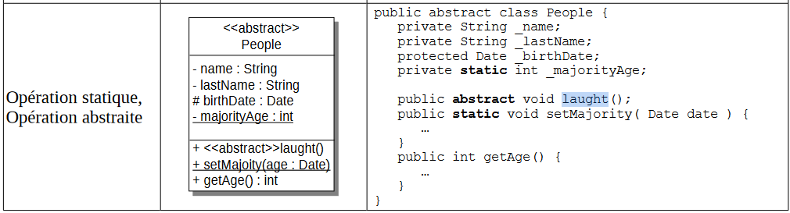
2.5 Exercice d'application⚓︎
Exercices
Une personne est caractérisée par son nom, son prénom, son sexe et son âge. Les objets de classe Personne doivent pouvoir calculer leurs revenus et leurs charges. Les attributs de la classe sont privés. Le nom, le prénom ainsi que l'âge de la personne doivent être accessibles par des opérations publiques.
Question : Donnez une représentation UML de la classe Personne, en remplissant tous les compartiments adéquats.
Deux types de revenus sont envisagés : d'une part le salaire et d'autre part toutes les autres sources de revenus. Les deux revenus sont représentés par des nombres réels (float). Pour calculer les charges globales, on applique un coefficient fixe de 20% sur les salaires et un coefficient de 15% sur les autres revenus.
Question : Enrichissez la représentation précédente pour prendre en compte ces nouveaux éléments.
Un objet de la classe Personne peut être créé à partir du nom et de la date de naissance. Il est possible de changer le prénom d'une personne. Par ailleurs, le calcul des charges ne se fait pas de la même manière lorsque la personne décède.
Question : Enrichissez encore la représentation précédente pour prendre en compte ces nouveaux éléments.
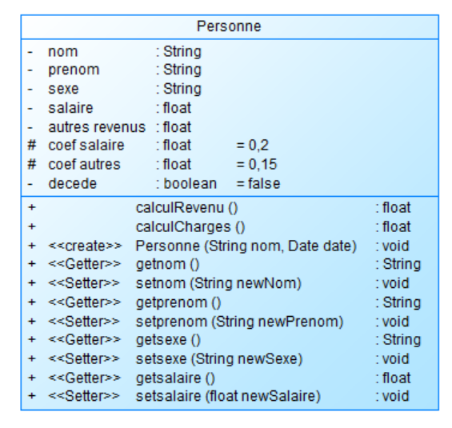 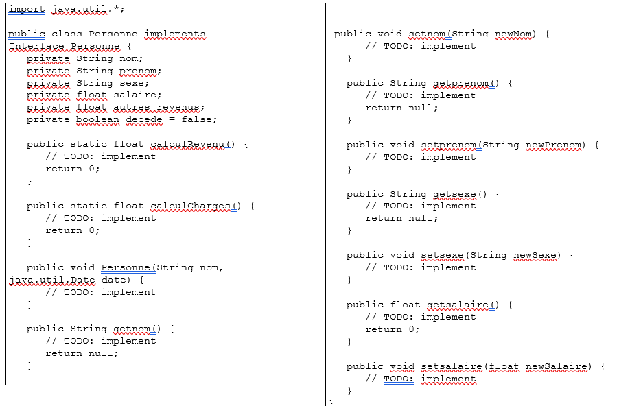
3. Faire du lien⚓︎
3.1 Les associations⚓︎
3.1.1 Définition Association⚓︎
 Une association représente une relation sémantique durable entre deux classes.
Une association représente une relation sémantique durable entre deux classes.
Exemple : une personne possède des comptes en banque. La relation POSSEDE est une association entre les classes Personne et compte.
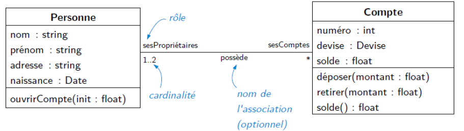
 Attention : même si le verbe qui nomme une association semble privilégier un sens de lecture, une association entre classe est par défaut bidirectionnelle. Donc implicitement, l’exemple précédent inclut le fait qu’un compte est possédé par une ou deux personnes.
Attention : même si le verbe qui nomme une association semble privilégier un sens de lecture, une association entre classe est par défaut bidirectionnelle. Donc implicitement, l’exemple précédent inclut le fait qu’un compte est possédé par une ou deux personnes.
Le nom porté par l’association permet de préciser le rôle de l’association entre deux classes.
La notion de Rôle : elle permet de nommer l'extrémité d'une association et permet d'accéder aux objets liés par l'association à un objet donné.
En conception détaillée, Chaque classes sera enrichi des objets liés par la relation.
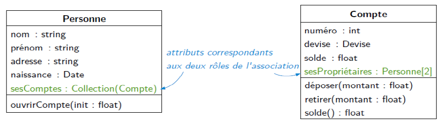
Mais en Modéilsation, on ne fera PAS apparître ses attributs si il existe une association entre les deux classes.
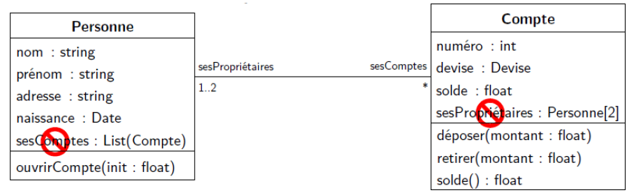
Il existe quelques notations qui viennent enrichir le langage UML sur les associations.
3.1.1.0 Exercice d'application⚓︎
Exercice
Dessiner les diagrammes d’objets et de classes correspondant aux situations suivantes :
1. La France est frontalière de l’Espagne. L’Algérie est frontalière du Maroc.
2. Tout écrivain a écrit au moins une œuvre
3. Les personnes peuvent être associés à des universités en tant qu’étudiants aussi bien qu’en tant que professeurs.
4. Un client demande une réparation. Une réparation est effectuée par un mécanicien. Elle nécessite des compétences. Un mécanicien possède des compétences.
5. Un rectangle a deux sommets qui sont des points. On construit un rectangle à partir de coordonnées de deux points. Il est possible de calculer sa surface et son périmètre, ou encore le translater.
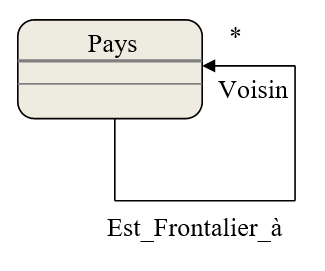 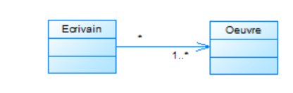 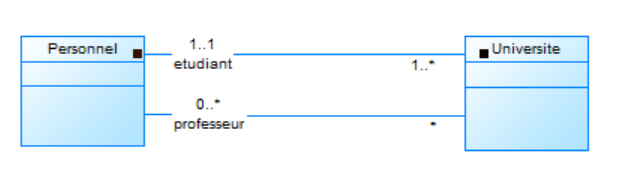 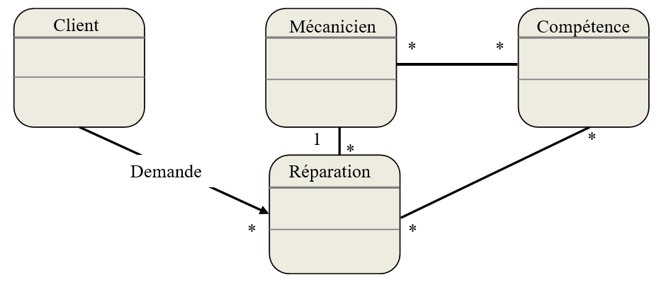 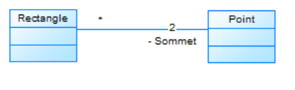
3.1.2 Association réflexive⚓︎
Une assocation peut relier une classe vers elle-même.
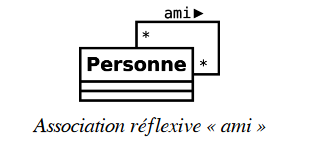
3.1.3 Association multiple⚓︎
On peut avoir des classes mises en relation pour deux rôles différents.
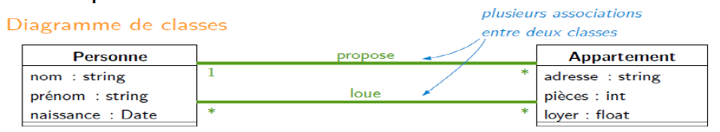 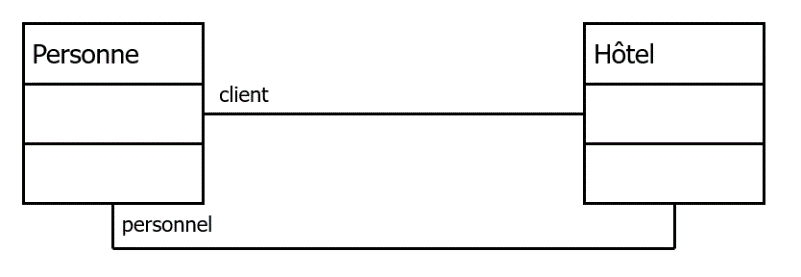
3.1.4 Navigabilité⚓︎
Il est possible de réduire la portée en la rendant unidirectionnelle. En général, ce choix se fait dans la phase de conception. Ici, une personne connaît son vote à un scutin, mais on ne pourra pas associer un vote à une personne.
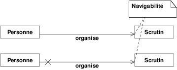
3.1.5 Classe d'Association⚓︎
La classe d'association permet de paramétrer une association entre deux classes par une classe. Elle est notamment utilisé lorsqu'une association est porteuse d'attributs. Les instances de ces attributs n'ont d'existence que si la relation existe entre deux instances. Les attributs portés ne peuvent pas exister dans l'une ou l'autre des classes, puisque qu'ils dépendent de la relation.
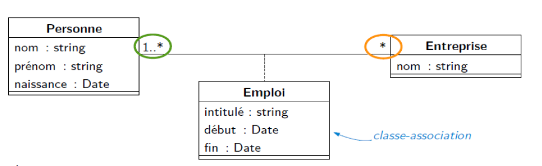 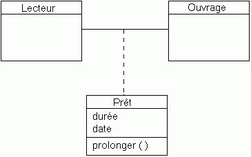 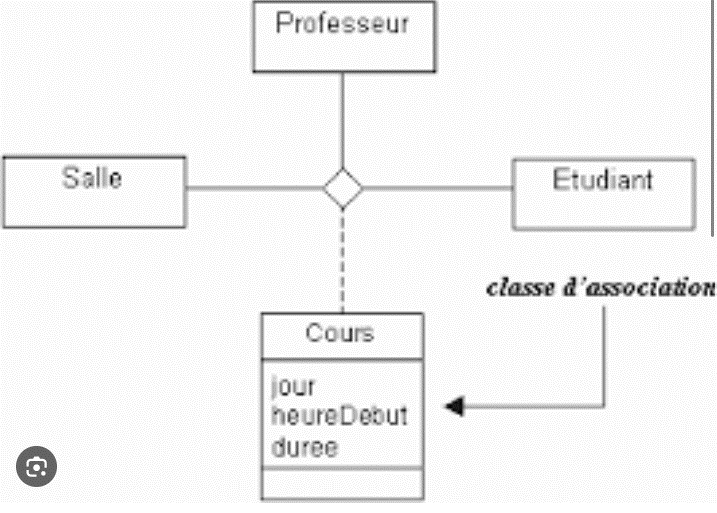
3.1.6 Les contraintes sur associations⚓︎
Les contraintes sont des expressions qui précisent le rôle ou la portée d'un élément de modélisation (elles permettent d'étendre ou préciser sa sémantique)
Contrainte {ordonnée} : une relation d’ordre décrit les objets
Contrainte {sous-ensemble} : une collection est incluse dans une autre collection
Contrainte {ou-exclusif} : pour un objet donné, une seule association est valide
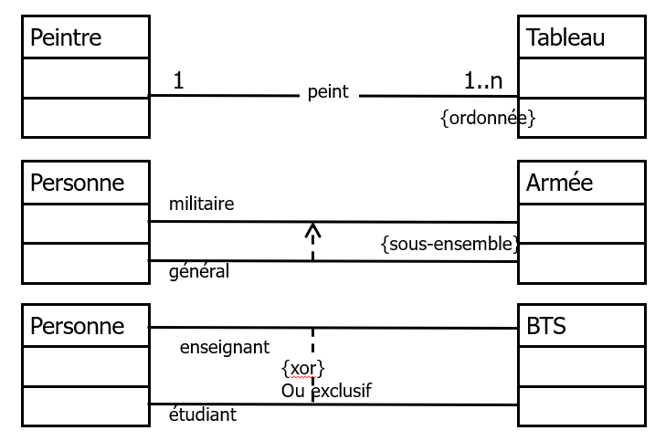
Exercice
Source : UML2 de l’apprentissage à la pratique de Laurent Audibert
Consigne : Construiser un diagramme de classe simplifié mais en utilisant toute la richesse du langage UML vu précédemment
- Deux personnes peuvent être mariées. Deux personnes mariées sont de sexes opposés. Proposer un diagramme de classes correspondant comportant une association réflexive.
- Même question que la précédente, mais en utilisant la relation de généralisation plutôt qu’une association réflexive.
- Deux personnes peuvent être mariées ou pacsées. Modifier le modèle de la question précédente en conséquence.
- Un Pacs est caractérisé par une date et un lieu. Un mariage est caractérisé par une date, un lieu et un contrat.
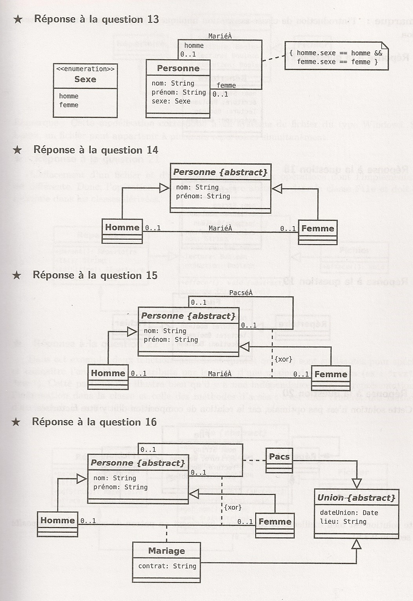
3.2 Les cardinalités⚓︎
La cardinalité située à une extrémité d’une association indique à combien d’instances de la classe située à cette extrémité, une instance de la classe située à l’autre extrémité est liée.
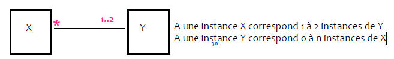
Il est possible de spécifier à une extrémité d’une association la cardinalité minimale et la cardinalité maximale pour indiquer un intervalle de valeurs auquel doit toujours appartenir la cardinalité.

 La multiplicité sur la classe contraint le nombre d’objet de la classe cible pouvant être associés à un objet donné de la classe source.
La multiplicité sur la classe contraint le nombre d’objet de la classe cible pouvant être associés à un objet donné de la classe source.
Sens de lecture des cardinalités :
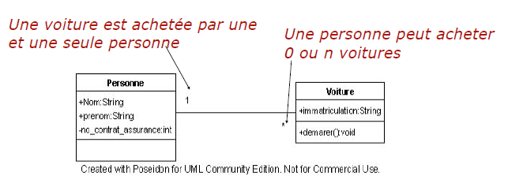
attention
Une cardinalité n'est pas "deviné", elle correspond à un besoin exprimé dans le cadre du projet étudié !
4 Développement du langage⚓︎
4.1 Généralisation et héritage⚓︎
Définition : L'héritage est un mécanisme qui permet à une classe, appelée la sous-classe ou classe dérivée, d'hériter des propriétés (attributs et méthodes) d'une autre classe, appelée la superclasse ou classe de base. La sous-classe peut étendre ou spécialiser les fonctionnalités de la superclasse en ajoutant de nouveaux attributs ou en modifiant le comportement des méthodes existantes.
On parle de classification selon 2 approches :
 La généralisation : abstraction d’un ensemble de classe en super classe.
La généralisation : abstraction d’un ensemble de classe en super classe.
 La spécialisation : affinement d’une classe en sous-classe
La spécialisation : affinement d’une classe en sous-classe
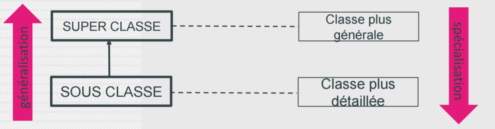
exemple :
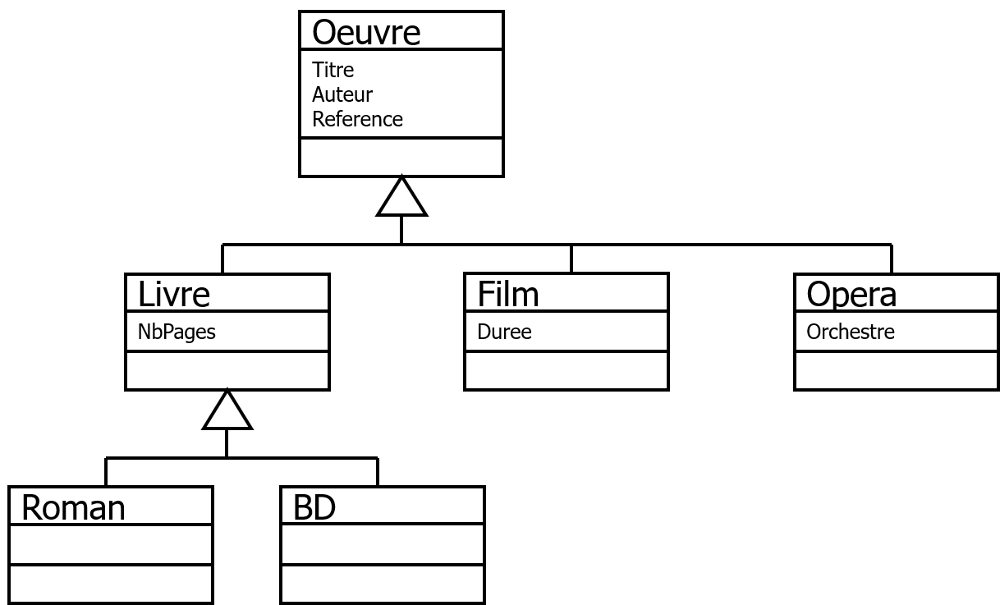
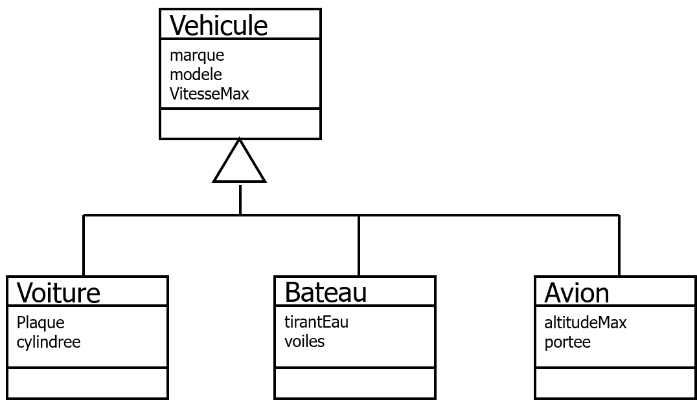
Caractéristiques de l'Héritage :
-
Réutilisation du Code : L'héritage permet de réutiliser le code existant d'une classe de base, évitant ainsi la duplication et favorisant la modularité.
-
Relation "Est-un" : L'héritage modélise la relation "est-un". Par exemple, si une classe B hérite de la classe A, on peut dire que "B est une A".
-
Extension des Fonctionnalités : La sous-classe peut ajouter de nouvelles fonctionnalités spécifiques tout en héritant des caractéristiques de la superclasse.
-
Polymorphisme : L'héritage facilite la mise en œuvre du polymorphisme, permettant aux objets de la sous-classe d'être traités comme des objets de la superclasse.
4.2 Agrégation⚓︎
Définition : Forme d’association qui spécifie la relation entre un ensemble ou « composé » et sa partie ou « composant ». On parle de relation composé-composant.

Elle a pour caractéristiques :
Représente une relation de type "ensemble / élément"
A un même moment, une instance d'élément agrégé peut être liée à plusieurs instances d'autres classes : l'élément agrégé peut être partagé
Une instance « ensemble » peut exister sans élément (et inversement) : Cycles de vies indépendants
Une agrégation peut notamment (mais pas nécessairement) exprimer :
 qu'une classe (un "élément") fait partie d'une autre ("l‘ensemble"),
qu'une classe (un "élément") fait partie d'une autre ("l‘ensemble"),
qu'un changement d'état d'une classe, entraîne un changement d'état d'une autre,
qu'une action sur une classe, entraîne une action sur une autre
La partie (composant) peut exister sans l’agrégat (composé)
Si le composé (agrégat) disparaît, le composant (partie) peut continuer d’exister
exemple :

la classe Étudiant agrège la classe Adresse. Cela signifie qu'un étudiant "a une" adresse. L'adresse peut exister indépendamment d'un étudiant et peut être partagée entre plusieurs étudiants.


4.3 Composition⚓︎
Définition : C’est un cas particulier d’agrégation. À la différence de l'agrégation, la composition indique une relation plus forte, où la classe composée est une partie intégrante de la classe composite. En conséquence, lorsque la classe composite est détruite, ses composants sont également détruits.
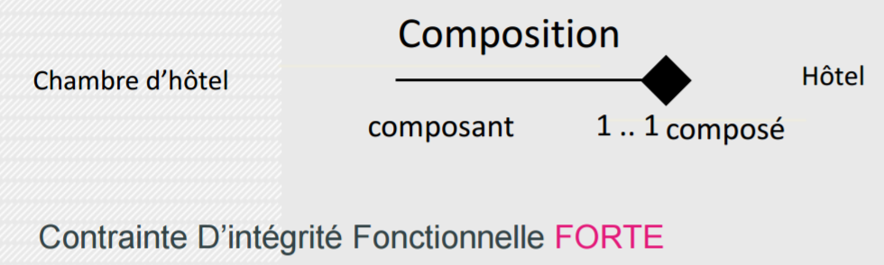
Les cycles de vies des composants et du composé sont liés : si le composé est détruit (ou copié), ses composants le sont aussi.
En conséquence :
A un même moment, une instance de composant ne peut être liée qu'à un seul composé !
La partie (composant) n’existe pas sans l’agrégat (composé) !
Si le composé (agrégat) disparaît le composant (partie) disparait aussi
exemple :
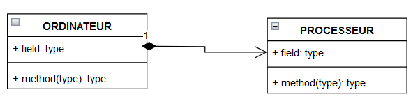
la classe Ordinateur compose la classe Processeur. Cela signifie qu'un ordinateur "a un" processeur en tant que partie intégrante. Si l'ordinateur est détruit, le processeur est également détruit.

4.4 Multiplicités des agrégations et des compositions⚓︎
note : La différence fondamentale entre l'agrégation et la composition réside dans la force de la relation et dans la durée de vie des objets impliqués.
Une agrégation peut avoir N maxi du côté de la classe agrégat car l’élément agrégeant peur servir (en même temps ou successivement) à plusieurs agrégats
Une composition ne peut avoir que 1..1 du côté de la classe composée car le composant, ne pouvant exister indépendamment du composé, est obligatoirement lié à un seul
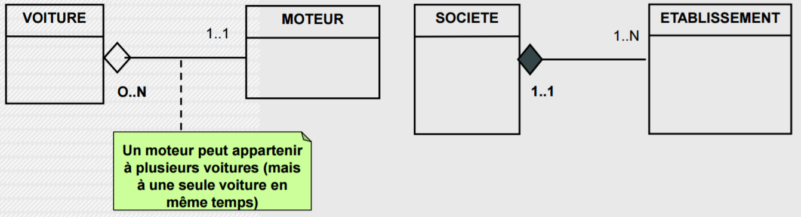
Agrégation ou composition
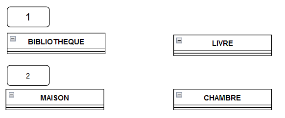
- une bibliothèque agrège des livres. Un livre peut être partagé entre plusieurs bibliothèques, et la destruction de la bibliothèque n'entraîne pas nécessairement la destruction des livres.
- une maison compose des chambres. Les chambres sont des parties intégrantes de la maison. Si la maison est détruite, les chambres le seront également. Les chambres ne sont généralement pas partagées entre plusieurs maisons.
Exercices
- Un répertoire contient des fichiers.
- Une pièce contient des murs.
- Les modems et les claviers sont des périphériques d’entrée/sortie.
- Une transaction boursière est un achat ou une vente.
- Un compte bancaire peut appartenir à une personne physique ou morale.
- Deux personnes peuvent être mariées.
Déterminez la relation statique appropriée (généralisation, composition, agrégation ou association) dans chaque phrase de l’énoncé précédent. Dessinez le diagramme de classes correspondant. N’hésitez pas à proposer différentes solutions pour chaque phrase.
- Un répertoire contient des fichiers.
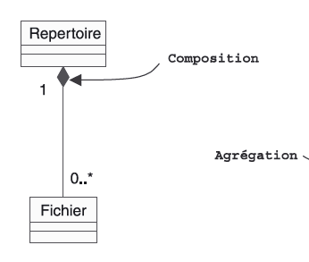
« Un répertoire contient des fichiers » : il s’agit au moins d’une agrégation. Voyons si nous pouvons aller plus loin et en faire une composition. Premier critère à vérifier : la multiplicité ne doit pas être supérieure à un du côté du composite. C’est bien le cas dans la première phrase, puisqu’un fichier appartient à un et un seul répertoire. Second critère : le cycle de vie des parties doit dépendre de celui du composite. Là encore, c’est le cas, puisque la destruction d’un répertoire entraîne la destruction de tous les fichiers qu’il contient. Nous pouvons donc parler de composition pour la première phrase.
- Une pièce contient des murs.
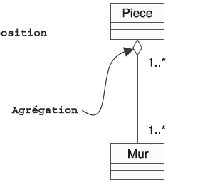
« Une pièce contient des murs ». Cette fois-ci, après vérification du premier critère, nous devons abandonner la composition. En effet, un mur peut appartenir à deux pièces contiguës (voire plus). La relation n’est donc qu’une agrégation. Afin de compléter les multiplicités, nous considérons qu’une pièce contient au moins un mur (circulaire !).
- Les modems et les claviers sont des périphériques d’entrée/sortie.
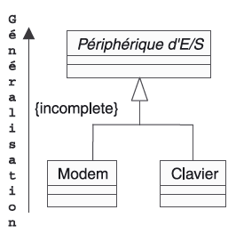 4. Une transaction boursière est un achat ou une vente.
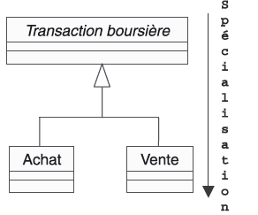
- Un compte bancaire peut appartenir à une personne physique ou morale.
La phrase 5 n’est pas une simple généralisation :
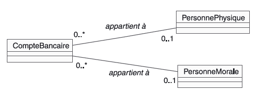
En effet, le groupe verbal employé n’est pas « est un » ou « est une sorte de », mais « appartient à ». Il s’agit donc d’une simple association. Une première approche simpliste consiste à décrire deux associations optionnelles, comme cela est illustré par la figure suivante.
Cette solution ne rend cependant pas compte du « ou exclusif » de la fin de la phrase. En effet, le diagramme précédent peut s’instancier aussi bien avec un objet CompteBancaire, lié à la fois à une PersonnePhysique et une PersonneMorale, qu’avec un Compte-Bancaire lié à aucun objet. Ce n’est pas ce que nous voulons : un objet CompteBancaire doit être lié soit à une PersonnePhysique, soit à une PersonneMorale, pas aux deux à la fois, mais exactement à une des deux, à l’exclusion de l’autre.
En fait, deux solutions correctes mais très différentes sont possibles qui consistent à : • Introduire explicitement la contrainte prédéfinie {xor} entre les deux associations qui portent une multiplicité strictement égale à 1
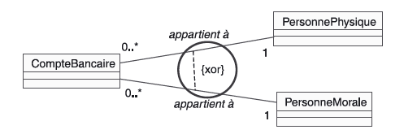
• Introduire une classe abstraite Personne, la spécialisation jouant implicitement le rôle du « ou exclusif ».
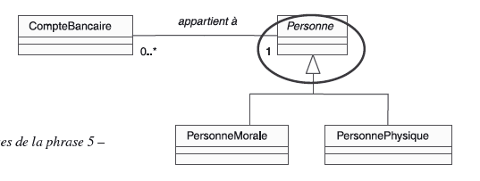
Exercices Encore
Source : Pierre Gérard, université de Paris 13.
1 . Les cinémas sont composés de plusieurs salles. Les films sont projetés dans les salles. Les projections correspondantes ont lieu chacune à une heure déterminée. 2. Tous les jours, le facteur distribue des reccommandés dans une zone géographique qui lui est affectée. Les habitants sont aussi associés à une zone géographique. Les recommandés sont de deux sortes : lettre ou colis. Comme plusieurs facteurs peuvent intervenir sur la même zone, on souhaite, pour chaque recommandé, connaître le facteur qui l'a distibué, en plus du destinataire.
- Les cinémas 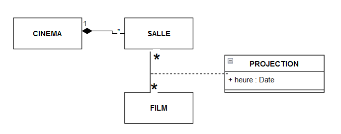
- Les facteurs 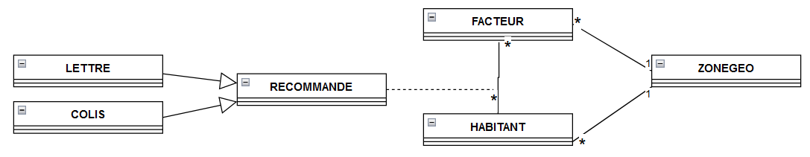
5. Règles de base pour la construction d’un diagramme de classe⚓︎
5.1 Règles concernant les attributs⚓︎
 Pour qu’il n’y ait pas d’ambiguïté possible, un attribut ne peut pas apparaître plusieurs fois dans un diagramme de classe. Autrement dit, toutes les propriétés doivent être différentes les unes des autres.
Pour qu’il n’y ait pas d’ambiguïté possible, un attribut ne peut pas apparaître plusieurs fois dans un diagramme de classe. Autrement dit, toutes les propriétés doivent être différentes les unes des autres.
Exemple : Une propriété date ne peut pas apparaître simultanément dans une classe COMMANDE et une classe FACTURE. Si c’était le cas, il faudrait remplacer Date par Date_commande et Date_facture par exemple.
 Toute propriété ne doit avoir à un moment donné qu’une seule valeur pour une occurrence.
Par conséquent, un nom d'attribut doit toujours être au singulier.
Toute propriété ne doit avoir à un moment donné qu’une seule valeur pour une occurrence.
Par conséquent, un nom d'attribut doit toujours être au singulier.
Exemple : Dans la propriété note d’une entité ELEVE, on ne peut avoir qu’une seule note. Si on veut la note de plusieurs matières, il faut mettre autant de propriétés qu’il y a de matières, par exemple noteANGL, noteEDM, noteMATH, etc.
5.2 Règles concernant les classes⚓︎
Toute classe doit comporter un identifiant qui permet de distinguer entre elles toutes les occurrences d’une même entité. L’identifiant est placé en tête des propriétés et il est suivi de <<id>>.
Le nombre d’attributs et de méthodes est variable selon chaque classe. Toutefois, un nombre élevé d’attributs et/ou de méthodes est déconseillé. Il ne reflète pas, en général, une bonne conception de la classe.
5.3 Règles concernant les cardinalités⚓︎
Une cardinalité ne doit pas être inventé mais dépend du contexte. En l’absence de spécification explicite, les cardinalités minimales et maximales valent 1.
Les cardinalités 1-1 sont extrêmement rare. Une relation aussi forte doit poser la question de l’existence des 2 classes. N'en forme t'elle pas qu'une seule ?
Exercice de synthèse
Source : UML2 par la pratique de Pascal Roques
Cette étude de cas concerne un système simplifié de réservation de vols pour une agence de voyages. Les interviews des experts métier auxquelles on a procédé ont permis de résumer leur connaissance du domaine sous la forme des phrases suivantes :
- Des compagnies aériennes proposent différents vols.
- Un vol est ouvert à la réservation et refermé sur ordre de la compagnie.
- Un client peut réserver un ou plusieurs vols, pour des passagers différents.
- Une réservation concerne un seul vol et un seul passager.
- Une réservation peut être annulée ou confirmée.
- Un vol a un aéroport de départ et un aéroport d’arrivée.
- Un vol a un jour et une heure de départ, et un jour et une heure d’arrivée.
- Un vol peut comporter des escales dans des aéroports.
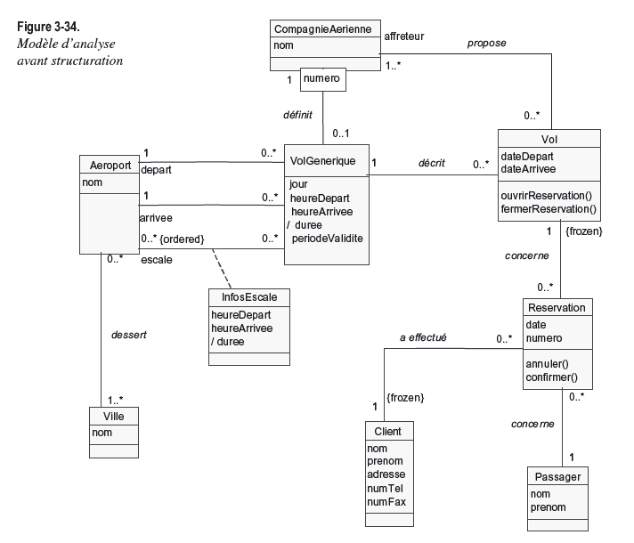